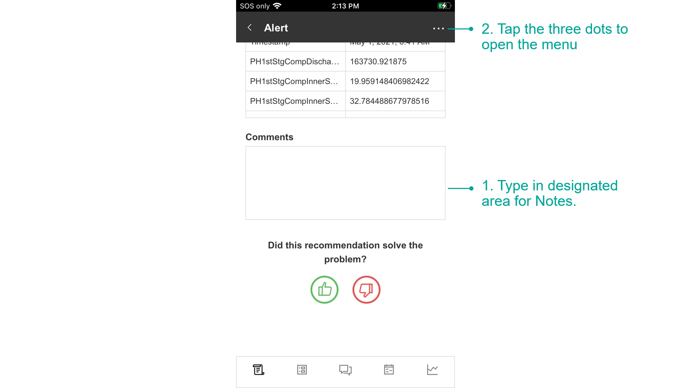
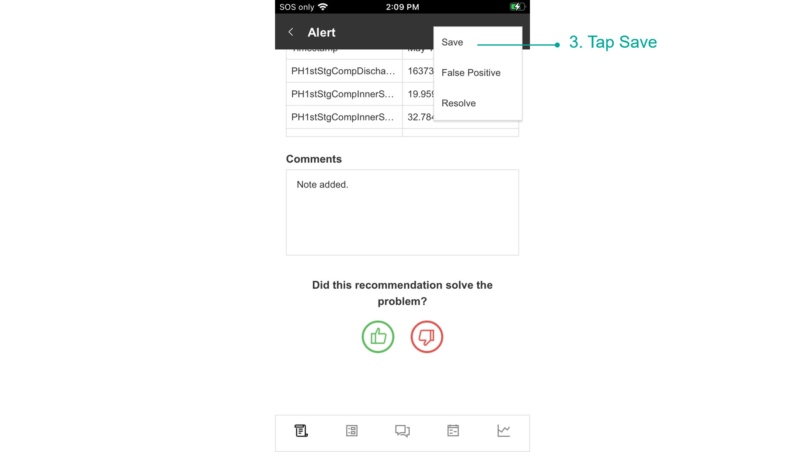
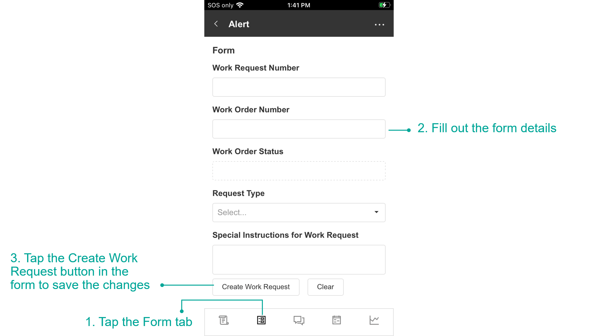
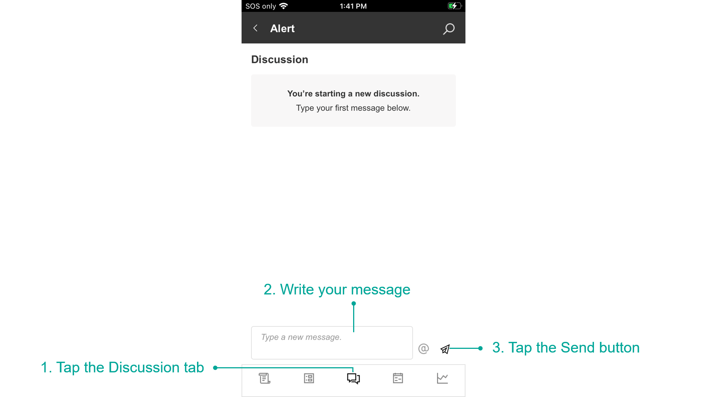
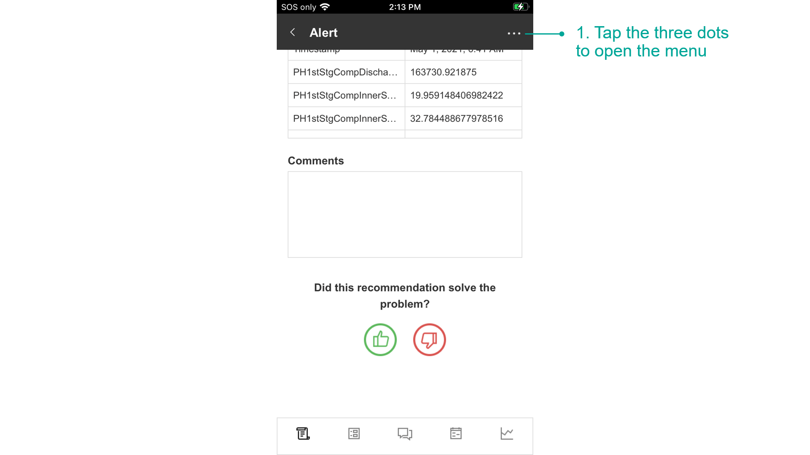
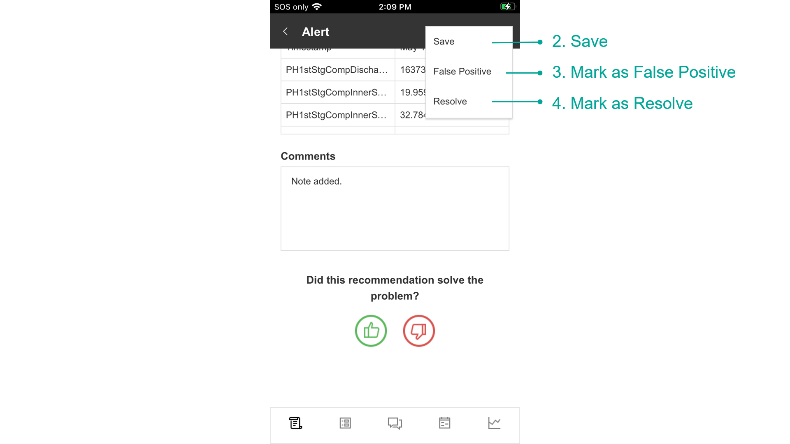

Manage Alerts on Mobile
Recommendation Alerts are advanced Alerts that get triggered when real-time data meets the criteria defined in a Recommendation Rule. They notify you when certain conditions occur in your data and provide decision support for how to take action.
Recommendations create new Recommendation Alerts based on Business Rules, and the Alerts recommend the best next actions based on expert suggestions. Recommendation Alerts monitor the actions taken and outcomes to close the loop on event response.
Note
It is recommended that you read the article listed below to improve your understanding of Recommendations Alerts.
How to Use the Alert Details Page
The Recommendation Alert page provides details of the Alert and allows you to monitor, discuss, and take action.
How to Add Notes
- Type in designated area for Notes.
- Tap the three dots to open the menu.

3. Tap Save.

How to Fill Out a Form
- Tap the Form tab.
- Fill out the form fields.
- Tap the Create Work Request button in the form to save the changes.

How to Contribute to a Discussion
- Tap the Discussion tab.
- Write your message.
- Tap the Send button.

How to Save, Resolve, and Mark as False Positive
- Tap the three dots to open the menu.
- Save - Changes will be saved and Alert Details Page will stay open.
- Mark as False Positive - Will mark the Alert as False Positive and will close the Alert Details Page.
- Mark as Resolve - Will resolve the Alert and close the Alert Details Page.


Last modified: June 06, 2025